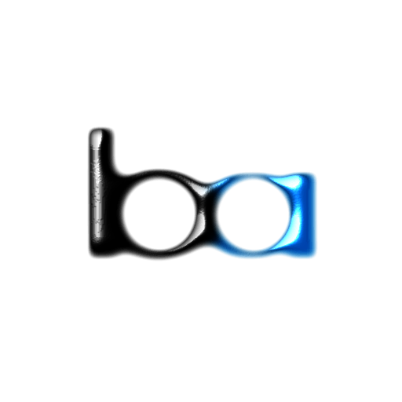
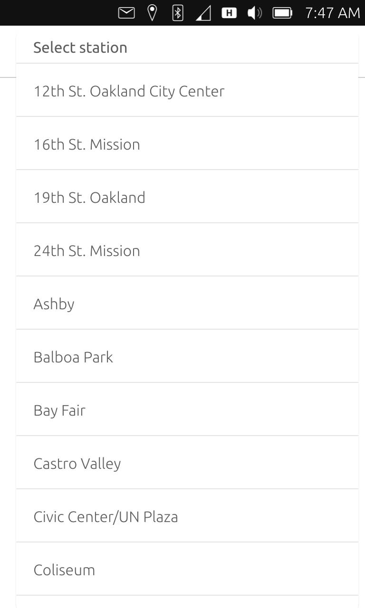
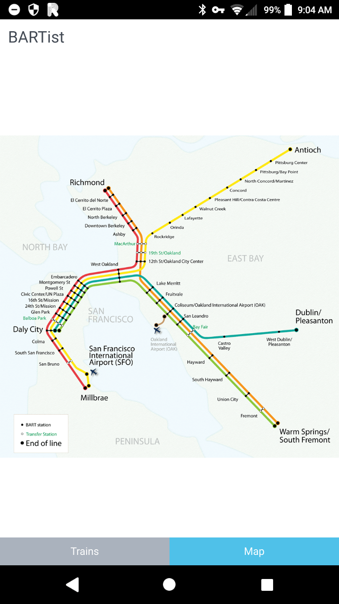
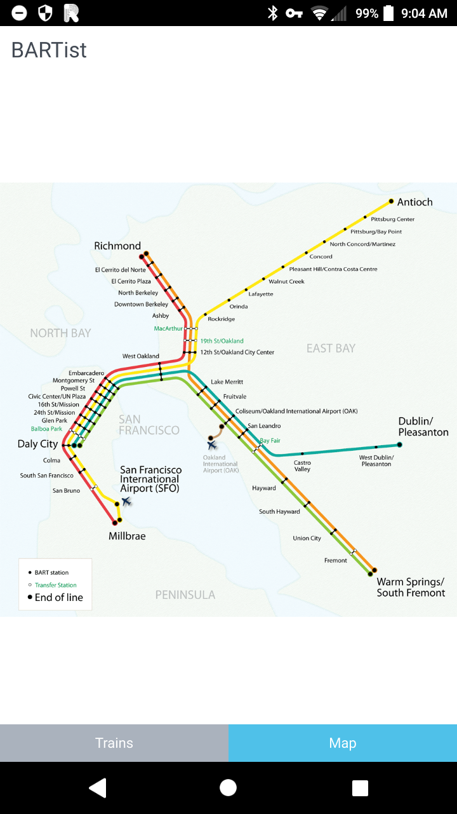

BARTist is an Android app that lets you see real-time BART train departure times for any train station.
BARTist is Free Software and is available under GNU GPL v3.
Feedback and suggestions are more than welcome by creating an issue on GitHub.

 
